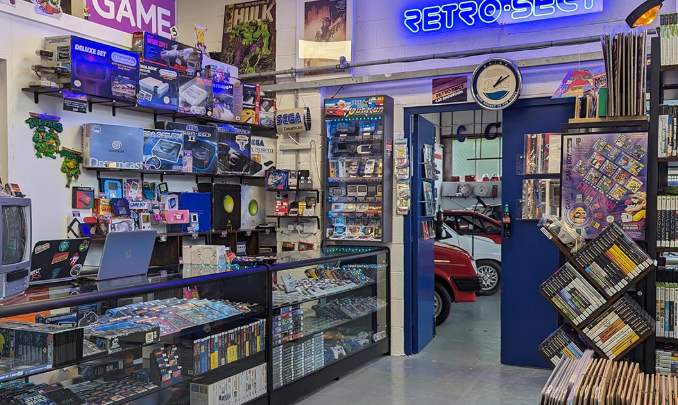
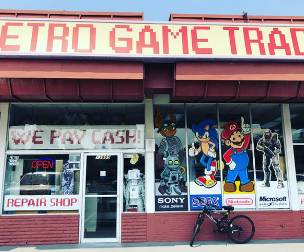

Consolas, cartuchos, recuerdos y pura nostalgia.
¿Qué encontrarás en Kendo Retro Shop?
En nuestra tienda podrás descubrir una colección cuidadosamente seleccionada de videojuegos
clásicos,
consolas originales, ediciones especiales, merchandising retro y artículos para coleccionistas.
Desde cartuchos de NES hasta consolas completas de la era PlayStation 2, todo está probado,
restaurado
y listo para revivir tu infancia o iniciarte en el mundo del gaming vintage.

Interior de la tienda

Exterior de nuestra tienda física